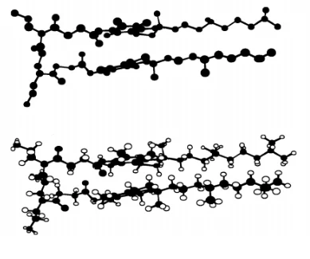
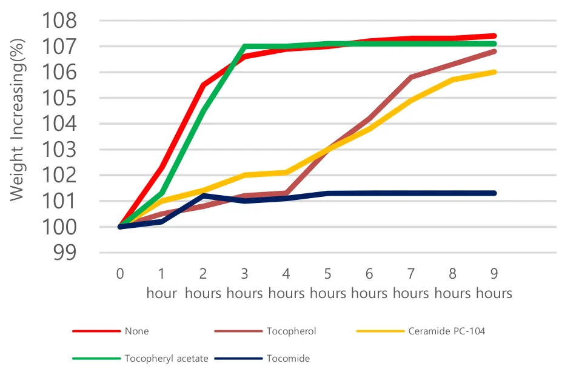
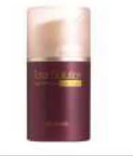
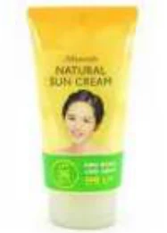
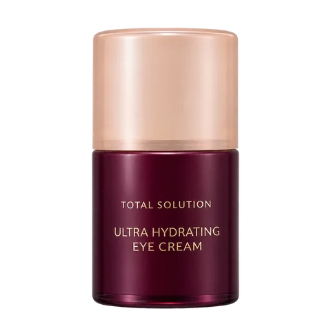
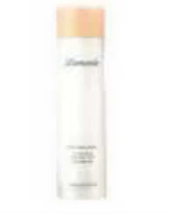
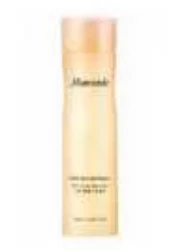

HOME
HOME- 원료소개
- 화장품원료
- Tocomide
Ingredient research
Tocomide
비타민 E와 세라마이드 복합체
01 / Overview & Strengths
개요 & 특장점
- 토코페롤(Vitamin E)과 세라마이드(Ceramide)가 결합한 복합체입니다.
- 항산화 및 보습의 이중효과가 있습니다.
- 피부 노화를 예방하는 토코페롤(Vitamin E)에, 세라마이드Ceramide)를 결합시켜 만든 안정화된 Vitamin E 유도체입니다.
※ 자세한 자료는 직접 문의 부탁드립니다.
Product features / Product Strengths
- 보습효과
- 장벽기능
- 항산화 효과
- 자극완화 효과
02 / Technical Information
기술 자료
원료 기본 규격 및 제품 카탈로그
- INCI Name
- Bis-Hydroxyethyl Tocopherlsuccinoylamino Hydroxypropane
- CAS No.
- -
- M.O.Q.
- 1KG
- Pack Size
- 1/10/20KG
- Appearance
- Powder
- Dosage
- 0.1~1%
03 / Research Data
기타 데이터
Introduction
- 토코페롤과 세라마이드의 결합체(Conjugate of tocopherol and ceramide)입니다.
- 항산화와 보습의 이중 효과(Dual effect of Anti-Oxidation and Moisturizing)를 냅니다.
- 합성 비타민 E 세라마이드(Tocomide) 분자의 구조 모델링(Structure modeling)입니다.


리놀레산 내 항산화 후보 물질의 시간별 무게 증가율(%) : Tocomide가 가장 낮은 증가율을 유지했습니다.
Skin Care주요 효능
- 보습 유지 효과
- 장벽 기능
- 항산화
- 자극 완화
- 유연 효과
원료 품질 시험 항목 및 기준
- Appearance
- White to cream white powder
- pH
- 5.8 ~ 7.8
- Assay
- Min. 95.0%
- Heavy metals
- Max. 20 ppm
- Arsenic
- Max. 2 ppm
- Microbial count
- <100 cfu/g
04 / Applications
적용 및 활용사례
원료의 주요 효능을 바탕으로 살펴보는 적용 검토 방향
-

마몽드 토탈솔루션 고보습 아이크림 -

마몽드 내추럴 선 크림 -

마몽드 하이드라 라스팅 크림 -

마몽드 하이드라 에멀젼 -

마몽드 하이드라 스킨 소프너